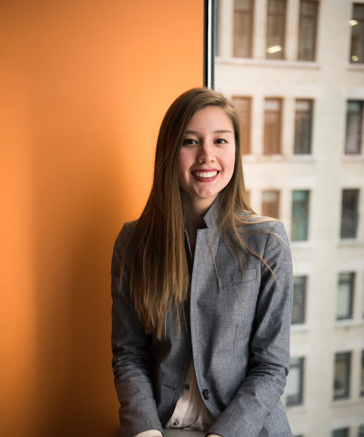

Hauptsitz · App-Team und Kanzlei
München, Werksviertel
Kühlhausgasse 4, 4. OG, 81671 München. Ein Loft mit Blick aufs Riesenrad, fünf Minuten vom Ostbahnhof. Besprechung im „Hauptbuch“ oder „Kassenbuch“.
089 99998 300Bei Kontorhaus hat jeder Betrieb einen festen Steuerberater – mit Foto, Durchwahl und Ahnung von deinem Handwerk. Dahinter sitzen 26 Menschen in München und Rosenheim, die dafür sorgen, dass deine Zahlen ruhig bleiben.
26 Menschen, fast die Hälfte Steuerprofis.
Im Werksviertel und in der Salzstadelgasse in Rosenheim.
Herbst 2020, ein Küchentisch in Giesing. Eine Steuerberaterin, ein Entwickler und eine Schreinerei, die als Erste mitgemacht hat.
Lena Hofbauer hat sechs Jahre in einer Kanzlei am Sendlinger Tor gearbeitet. Jedes Frühjahr dasselbe Bild: Schuhkartons voller Belege auf ihrem Schreibtisch – und Mandanten, die erst im Steuerbescheid erfahren, wie ihr Jahr eigentlich gelaufen ist. Nicht die Arbeit hat sie gestört. Sondern dass alle so lange im Dunkeln saßen.
Ihr Schulfreund Jonas Weidinger, damals Entwickler bei einem Berliner Fintech, baut ihr an ein paar Wochenenden ein Dashboard. Drei Testkunden machen mit. Der erste ist die Schreinerei Brandl in Giesing: Andreas Brandl fotografiert seine Belege, sieht zum ersten Mal unterm Jahr, was übrig bleibt – und erzählt's in der Innung weiter.
Im März 2021 wird daraus die Kontorhaus GmbH, mit zwei Schreibtischen im Coworking in der Maxvorstadt. Zwei Jahre später merken die beiden etwas, das in keinem Pitch-Deck stand: Software allein reicht nicht. Die Leute wollen jemanden anrufen können. Also kommt Murat Kaya als Partner dazu – 15 Jahre Steuerberater für Gastro und Handwerk – und Kontorhaus wird auch eine echte Kanzlei.
Heute sitzen wir in einem Loft im Werksviertel, mit Blick aufs Riesenrad, an langen Holztischen. Gebaut hat sie, natürlich, die Schreinerei Brandl.

„Die beste Steuerberatung ist die, bei der im März keiner Angst hat.“
Vom Küchentisch bis zur KI-Funktion für alle Kunden – ohne Abkürzungen, aber mit ein paar sehr guten Brezn.
Lena und Jonas bauen das erste Dashboard für drei Testkunden. Der erste: die Schreinerei Brandl.
150.000 € Eigenkapital, ein Gründerstipendium und zwei Schreibtische im Coworking in der Maxvorstadt.
Nach einem Abend bei der Handwerkskammer melden sich die ersten Betriebe, die nicht mehr nur testen wollen.
Murat Kaya wird Partner, die Kontorhaus Steuerberatungsgesellschaft wird gegründet. Weil Menschen jemanden anrufen wollen.
Am Salzstadelgasse, mit Johanna Reiter – nah an den Hofläden und Betrieben im Chiemgau.
Angeführt von Kampenwand Capital. Das Geld fließt in mehr Steuerprofis und eine bessere App.
Loft im 4. Stock, Blick aufs Riesenrad, Holztische von der Schreinerei Brandl. Pepe und Lotte ziehen mit ein.
Das Café Goldammer in Untergiesing. Selin Aydın hat zur Feier Kuchen ins Loft gebracht – für alle.
Unsere KI-Funktion geht an alle Kunden: Fragen stellen wie einem Menschen – mit Beleg zum Nachklicken.
Menschen im Team, fast die Hälfte davon Steuerprofis
Betriebe in Bayern führen ihre Bücher mit uns – rund gerechnet
unserer Kunden bleiben länger als ein Jahr
Standorte: München-Werksviertel und Rosenheim. Augsburg folgt 2027.
Unsere Steuerberaterinnen und Steuerberater buchen, prüfen, machen deinen Abschluss und gehen ans Telefon, wenn du anrufst. Die App zeigt dir nur, was sie gerade tun.
Mit Namen, Durchwahl und Foto. Er kennt deinen Betrieb.
Im Berater-Chat, garantiert. Meist geht's schneller.
Lizenzierte Bankschnittstelle, Export an jede gängige Kanzleisoftware.
Steuerberaterkammer München, Berufshaftpflicht, Server in Frankfurt.
Steuerprofis, Entwicklerinnen, ein Schreinermeister im Vertrieb. Fahr mit der Maus über ein Foto – oder tipp drauf – und du erfährst, was die Kolleginnen und Kollegen besonders macht.

Läuft jeden Morgen an der Isar – und bringt montags die Brezn mit.
Steuerberaterin aus Rosenheim, sechs Jahre Kanzlei am Sendlinger TorGründerin, CEO
Schreibt jede Release-Note selbst – immer mit Wortwitz.
Informatik an der TUM, danach Fintech in BerlinMitgründer, CTO

Kennt jede Bäckerei in Haidhausen persönlich – und läutet die Kuhglocke.
Steuerberater, 15 Jahre Gastro und HandwerkPartner, Leitung Kanzlei

Betreut die meisten Hofläden und Landwirte im ganzen Haus.
Kanzlei-Erfahrung im ChiemgauSteuerberaterin, Rosenheim

Erklärt Umsatzsteuer mit Fußballvergleichen. Funktioniert erstaunlich gut.
Ausbildung in einer Traunsteiner KanzleiSteuerfachwirt

Hat unseren Claim auf einem Bierdeckel erfunden. Der Deckel hängt gerahmt im Loft.
Vorher Marketing bei einem Münchner Outdoor-LabelHead of Growth
Organisiert das Sommerfest am Flaucher – inklusive Notfall-Sonnencreme.
Eventmanagement, danach HR im StartupOffice & People
Macht die strengsten Code-Reviews im Haus. Alle sind heimlich dankbar.
Backend und Open SourceLead Engineer
Hüterin des Designsystems – und der Pfirsich-Farbe.
Design-Studium in AugsburgProduct Designerin
Baut „Frag deine Zahlen“ und testet jede Antwort erst an der eigenen Steuererklärung.
Promotion in Statistik an der LMUData & KI
Spricht die Sprache der Kunden – wortwörtlich. Er war selbst einer.
Gelernter SchreinermeisterVertrieb Handwerk
Beantwortet Chats schneller als jeder Bot. Wir haben's gemessen.
Duales Studium BWLCustomer Success

Dreht die Reels „Zahlen in 30 Sekunden“ – meistens in einem Take.
Kommunikationswissenschaft an der LMUContent & Social
Dazu vier Entwickler, sieben Steuerfachangestellte, eine Werkstudentin im Marketing und eine Buchhalterin. Und die Bürohunde Pepe und Lotte.weitere Kolleginnen und Kollegen – plus Pepe und Lotte.
Werd einer davonKarriereKeine Wandtattoos, sondern Regeln, nach denen wir jeden Tag arbeiten – mit dir und miteinander.
Steuer ist kein Notfall. Wir melden uns früh, rechnen vor und sorgen dafür, dass im März keiner nervös wird.
Kein Fachchinesisch ohne Übersetzung. Wenn's teuer wird, sagen wir's dir – bevor das Finanzamt es tut.
Jeder Betrieb hat einen Menschen mit Namen, Foto und Durchwahl. Keine Ticketnummer, keine Warteschleife.
Wir respektieren Arbeit, die man anfassen kann. Einmal im Quartal stehen wir deshalb selbst beim Kunden in der Werkstatt.
Zwei Standorte, ein Team. Ob du ins Werksviertel kommst, nach Rosenheim oder lieber per Video redest – dein Steuerberater bleibt derselbe.
Ein Punkt ≈ zehn Betriebe, die wir betreuen
Kühlhausgasse 4, 4. OG, 81671 München. Ein Loft mit Blick aufs Riesenrad, fünf Minuten vom Ostbahnhof. Besprechung im „Hauptbuch“ oder „Kassenbuch“.
089 99998 300Salzstadelgasse 7, 83022 Rosenheim. Hier berät Johanna Reiter mit ihrem Team die Betriebe im Chiemgau – vom Hofladen bis zur Zimmerei.
089 99998 380Unser dritter Standort, mit drei Steuerberaterinnen und Steuerberatern für Schwaben und das Augsburger Land. Die Räume suchen wir gerade.
Wir suchen dich dafürWir sind keine Rakete, sondern ein Betrieb mit Plan. Seit Frühjahr 2026 sind wir monatlich profitabel – und die Mehrheit gehört weiter den Gründern.
Das Erstgespräch ist kostenlos – im Werksviertel, in Rosenheim oder per Video. Wir hören zu, rechnen kurz vor und sagen dir ehrlich, ob wir zusammenpassen.